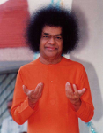

Welcome to Sai Center of Greater KC
Our Center is devoted to Bhagavan Sri Sathya Sai Baba's mission to spread the Universal Religion of Love and Truth. The Center belongs to region 4 and is ideal for devotees in the Kansas City area (Overland Park, Olathe, Leawood, Shawnee, KCMO, etc). Regular devotional, educational and service programs are conducted here as part of the International Sathya Sai Organization:
- Weekly bhajans
- Weekly SSE (Bal Vikas) classes for children
- Service projects
We welcome you to the Sai Center! For any questions or further information please contact us at the following email address: greaterkcsaicenter@gmail.com
I have come to light the lamp of love in your hearts, to see that it shines day by day with added luster. I have not come to speak on behalf of any particular [religion]... I have not come on any mission of publicity for any sect or creed or cause; nor have I come to collect followers for any doctrine. I have no plan to attract disciples or devotees into my fold or any fold. I have come to tell you of this universal unitary faith, this [divine soul] principle, this path of love, this... duty of love, this obligation to love. -- Sathya Sai Baba (Sathya Sai Speaks, vol. 8, no. 22)
Bhajans
Bhajans take place every Saturday from 5 pm to 6 pm.
Venue:
Please email greaterkcsaicenter@gmail.com to find the venue.
Agenda:
5 - 6pm - Bhajans
Email distribution list:
To subscribe for our weekly emails, please email us at greaterkcsaicenter@gmail.com and we will add you as part of our email list.Special Events
Shivratri 2018
Shivratri bhajans will be held on February 13th, 2018 from 6pm - 9pm.
Venue:
Please email greaterkcsaicenter@gmail.com to find the venue.
Agenda:
6 - 7 pm - Vedam Chanting7 - 9 pm - Bhajans
Email distribution list:
To subscribe for our weekly emails, please email us at greaterkcsaicenter@gmail.com and we will add you as part of our email list.SSE Parent Workshop
Topic: Parental Influence on Children in the 21st Century
There is no job description for a parent. You are continuously learning your role. Did you ever think about ...- Your child’s atmosphere outside Home?
- The challenges or influences they have?
- How we are raising our children in multicultural environment?
Venue:
Please email greaterkcsaicenter@gmail.com to find the venue.
Agenda:
2.30 - 4.30 pm - Parents workshop with Q&A4.30 - 5.30 pm - Interactive session with parents and children
Speaker
Siddharth (Sid) Sivakumar is pursuing MD + PhD in Neuroscience at Washington University, St. Louis. He was born in Virginia where he completed his schooling as well as Sai Spiritual Education (SSE). He earned B.S. (Biochemistry) from Case Western Reserve University, Cleveland, OH. He is the cofounder and co-director of NeuroInspire Education, Inc., a nonprofit organization that provides free science enrichment and outreach programs to underserved primary school students in the Washington, DC metro area. He is a trained SSE teacher and Young Adult mentor to students, and has conducted workshops with students and parents in several cities in US and India. He is excited to share his insights about the modern parent-child relationship and the importance of spiritual education in the 21st century with the Kansas City community.
Email distribution list:
To subscribe for our weekly emails, please email us at greaterkcsaicenter@gmail.com and we will add you as part of our email list.Resources
Please go through the below links for some useful resources and information regarding the Sathya Sai International Organization:
- Radio Sai
- Prasanthi Mandir Bhajans
- International Sathya Sai Organization
- Sri Sathya Sai Central Trust
Thought for the day
Please click here to read the thought for the day.
Sai Spiritual Education (SSE)
Sai Spiritual Education (Bal Vikas) classes are conducted every Saturday for the spiritual education and human values development of children ages between 4 thru 15.
Venue:
Please email greaterkcsaicenter@gmail.com to find the venue.
Agenda:
3 - 4.20 pm - SSE ClassesEmail distribution list:
To subscribe for our weekly emails, please email us at greaterkcsaicenter@gmail.com and we will add you as part of our email list.
Service Activities
Service activities are conducted once a month. Food is collected, prepared and distributed at the City Union Mission shelter for needy.
Date and Venue:
Please email greaterkcsaicenter@gmail.com to find the date, time and venue.Email distribution list:
To subscribe for our weekly emails, please email us at greaterkcsaicenter@gmail.com and we will add you as part of our email list.
Contact Us
In order to reach out to us for any questions or information please email us at greaterkcsaicenter@gmail.com.